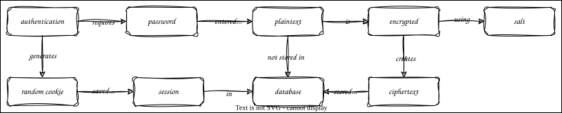

Encryption
Overview

Outline
- Never store passwords as plaintext
- Create a migration to encrypt them and save ciphertext
- Generate a secret in
generate_encryption.py make_secretinutil.pyuses Python's secrets module- Save in a file that never goes in version control (or anywhere else)
- Then encrypt passwords using
blake2bfrom hashlib
- Generate a secret in
- Hash the combination of the secret and their password
- The secret is a salt
- When someone logs in:
- Check that the encrypted version of the secret plus their password matches the stored value
- Create a random number as a cookie
- Store that and their ID in a dictionary of sessions
- When someone requests access to experimental data:
- If their cookie is in the sessions, use their staff ID
- Otherwise reject as unauthorized
- Still insecure
- We are getting their password over an unencrypted channel
- The cookie is being passed back and forth over the same channel
- Look at certificates in an appendix